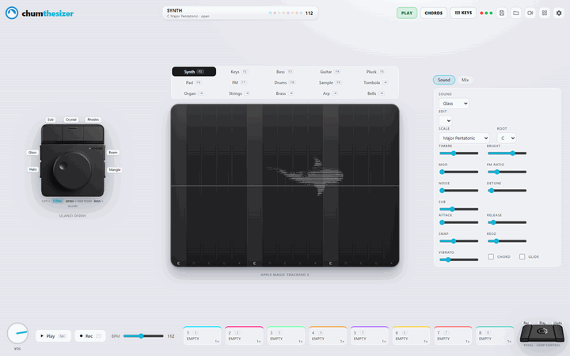
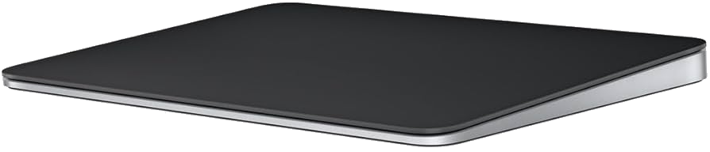
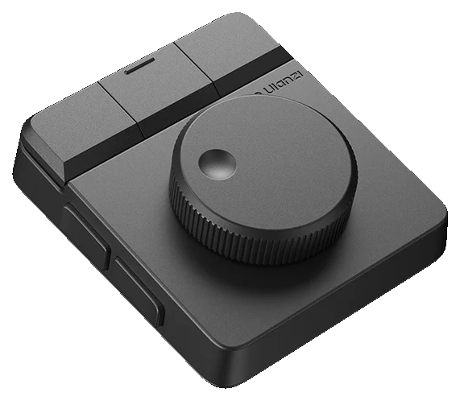
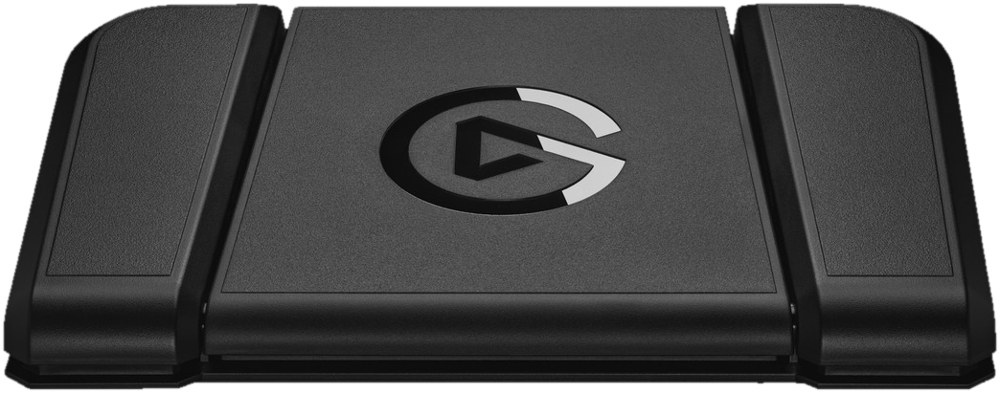
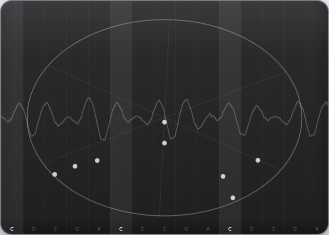
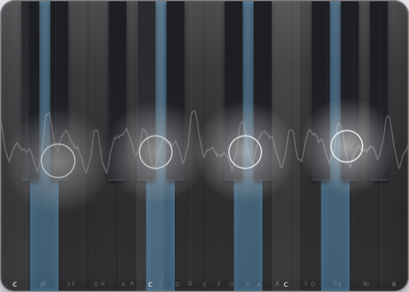
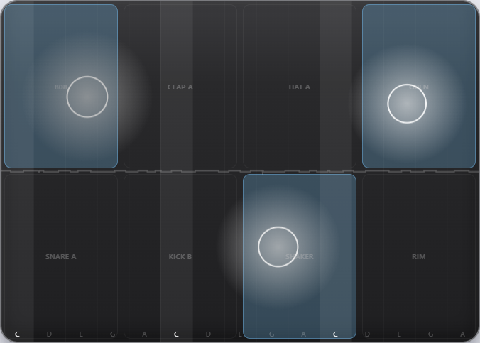
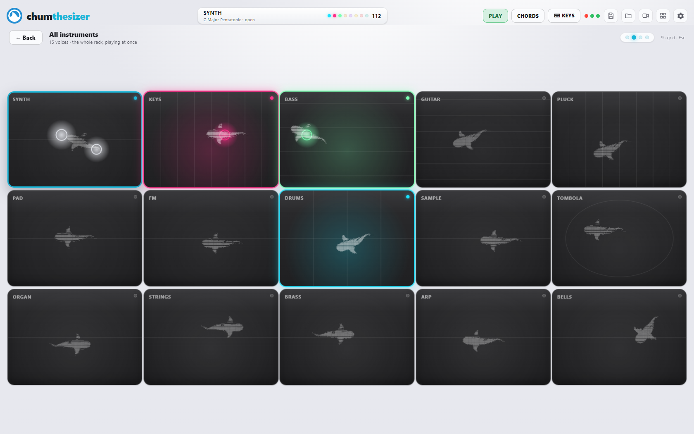

chumthesizer is a groovebox you play with three real devices —
a Magic Trackpad as the instrument surface, an Ulanzi dial that warps the sound, and a
Stream Deck pedal that drives the loop. 15 voices, an 8‑track looper, a
reactive screen, and an ASCII shark that cruises the pad.
No install, no hardware — fully playable with mouse · keyboard · touch. Each device lights up if you connect it.
One surface, a whole rack
The multitouch trackpad plays an in‑app Web Audio synth — X is pitch, finger height is
loudness and brightness. Under it sits a drum machine, a 16‑step sequencer, and a looper
that records, overdubs, mutes, stacks, and clones layers at ½× / 1× / 2× on one drift‑free
clock. Switch the surface between 15 voices live; each remembers its own sound.

Live: building a full 8‑track loop — spin the dial, press its keys to swap sounds, chord mode, then the whole rack in grid view.
Three devices, each doing what its shape is best at
All three are optional. The app is fully playable without them and lights each one up as you connect it.

the instrument
Magic Trackpad 2
Multitouch play surface. X glides pitch; finger height drives dynamics (top = loud/bright, bottom = soft/dark). A small Raw‑Input helper feeds finger contacts in and mutes the OS cursor while you play.

the warp
Ulanzi D100H dial
Turn = the current knob macro (Filter → Bright → Reverb → Mod → Noise); press = cycle it. The 7 keys are sound presets — hold one for that sound, hold several to blend them into a new in‑between voice.

hands‑free
Stream Deck Pedal
Left = Rec the next layer (auto‑advances, so it doubles as “next”). Middle = Play/Stop everything. Right = Undo the last layer. A foot‑driven loop station.
Each device is owned by its own driver/software, so a tiny localhost bridge re‑broadcasts it to the app — see Build & play for setup. The reverse‑engineering write‑up for the dial lives in ulanzi‑d100h‑homebrew.
Fifteen voices
Switch from the 5×3 grid above the pad, Tab, the dial keys, or F1–F9. Each melodic voice remembers its own sound.
🎚️
Synth
Continuous pitch ribbon — X glides pitch, height swells it. The expressive theremin.
🎹
Keys
Struck notes on a real piano keyboard overlay; held notes light up.
🎛️
Organ
Drawbar columns — thick and sustained.
🌫️
Pad
Soft sustained bands — slow attack, long release.
🔔
Bells
Bright struck bells — glassy and high, with a touch of FM shimmer.
✦
Pluck
Short, percussive plucks down narrow key columns.
〰️
FM
Metallic FM voice on a faint cross‑lattice.
🎸
Bass
Fat, low ribbon — its preset carries the octave and weight.
🎸
Guitar
Plucky struck voice across six pluckable strings.
🎻
Strings
Bowed, orchestral lines.
🎺
Brass
Three trumpet valves.
↗️
Arp
Hold a chord and it arpeggiates in time; lift fingers to change it.
🥁
Drums
A labelled pad kit that also writes the 16‑step beat (bake it into a loop layer).
⦿
Tombola
A physics sequencer: drop bouncing balls into a spinning arena; each wall hit plucks a note.
🎤
Sample
Record from the mic, then play the clip pitched across the pad — the vocal‑chop move.

Tombola
Drop bouncing note‑balls into a spinning arena; every wall hit plucks a note.

Keys
A real piano keyboard overlay — hold several notes for a chord.

Build the song loop by loop
An 8‑track looper rides one drift‑free clock, so every layer stays locked together.
Record · overdub · mute · stack · clone any of the 8 tracks
Play each layer at ½× / 1× / 2×
Every layer keeps the instrument and sound it was recorded with
Knob sweeps are recorded too — the filter automation replays with the loop
Tap a loop to jump to its instrument, so the whole song is loop‑by‑loop

…and a shark that swims it
A faint ASCII shark cruises the play surface and chases your fingers.
Flip to Grid view (9) — all 15 voices on screen at once, each its own mini trackpad with its own shark, lit in its loop’s colour
Type jaws for a feeding frenzy
Click the logo ×5 and the shark breaks loose to swim the whole app
Hold \ for a tape‑stop — the whole machine grinds to a halt, then spins back up
Playable from the keyboard
The hardware mirrors these. Press / in‑app for the live legend.
A…;Q…PPlay scale degrees — hold several for a chord
1–8Record → play → mute that loop (and jump to its instrument); Shift clears
Space / EnterPlay / stop · ` arm record · Del undo last loop
Pure TypeScript + Vite. Runs as a browser tab, an Electron desktop app, or a static site.
# clone, then:
npm install
npm run dev # Vite dev server → http://127.0.0.1:5173
npm run app # build trackpad helper + dial plugin, build, launch Electron (best for hardware)
npm run build # production build → dist/
Click once to start audio, then play. Electron is the best home for the trackpad — it auto‑starts the Raw‑Input helper and unblocks WebHID. Settings and the current pattern persist to localStorage.